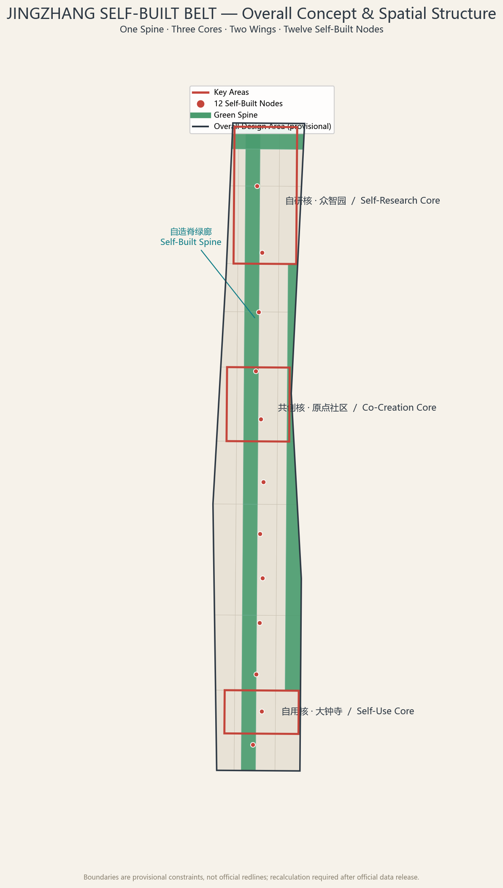
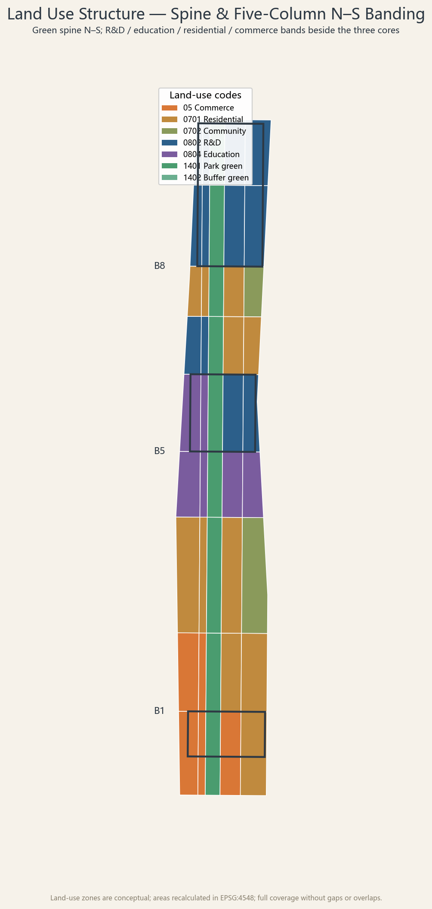
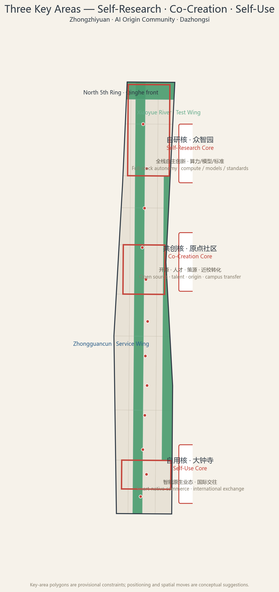
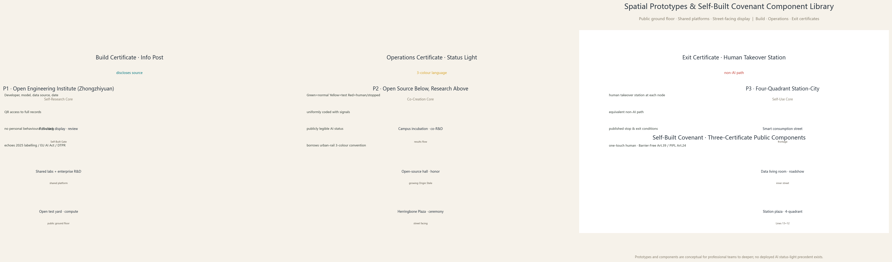
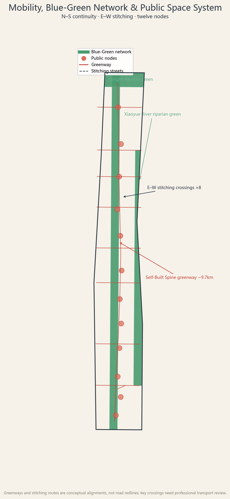

01 Overview Map
One spine · three cores · two wings · twelve Self-Built Nodes. The Self-Built Spine runs north–south; the Zhongzhiyuan Self-Research Core, the AI Origin Co-Creation Core and the Dazhongsi Self-Use Core anchor the belt; the Zhongguancun Service Wing and the Xiaoyue River Test Wing support from east and west.

02 Core Metrics
03 Three-Level Scope
Coordinated Research Area approx. 43.6 km² · Overall Design Area approx. 11.4 km² (submitted boundary) · Key Detailed Design Area approx. 368.4 ha. A strategy–structure–parcel delivery chain.

04 Key Areas
Self-Research Core · Zhongzhiyuan (full-stack autonomy), Co-Creation Core · AI Origin Community (open source, talent, origin), Self-Use Core · Dazhongsi (smart-native commerce). Three pilgrimage landmarks: the Self-Built Gate, the Origin Stele and the Bell Platform.

04.5 Spatial Prototypes & Self-Built Covenant Component Library
Each core gets a reusable spatial prototype (public ground floor · shared platforms · street-facing display): Self-Research "Open Engineering Institute", Co-Creation "Open Source Below, Research Above", Self-Use "Four-Quadrant Station–City"; plus a ~1 km² typical-block deepening in Zhongzhiyuan. The three certificates become public components — Build Certificate Info Post, Operations Certificate Status Light (green/yellow/red), Exit Certificate Human Takeover Station.

05 Land Use
One spine, five columns, nine bands: the Self-Built Spine in the middle with R&D, education, residential and commercial bands on both sides; 45 parcels provide seamless full coverage of the submitted boundary.
06 Mobility
Self-Built Spine slow greenway approx. 9.7 km; eight east–west stitching crossings; four-quadrant pedestrian connectivity and station–city integration around Dazhongsi station.

07 Blue-Green & Public Space
One spine, two rivers, three cores, multiple nodes: the Self-Built Spine plus the Qinghe and Xiaoyue River riparian belts plus twelve Self-Built public nodes.
08 Buildings
74 conceptual building footprints (research, education, mixed, residential), expressed as conceptual new build, conceptual renovation or existing retained to be surveyed; demolition/renovation conclusions await official baseline data.
09 Renewal Projects
Eight concept projects organized by "stitching, self-building, memory"; phasing is Phase 1 pilot (Origin) → Phase 2 renewal (Zhongzhiyuan) → Phase 3 governance (Dazhongsi–south).
10 AI Scenarios
Twelve AI scenario cards (including 3 industry test/validation scenarios) under the Self-Built Covenant: traceable source, answerable responsibility, reversible exit.
Autonomous model benchmarkEmbodied robot test lineData-factor living room Open-source release hallAccessible AI guideHealth & elderly station Smart consumption streetCampus transfer stationSlow-mobility AI guidance Global event routeNight dev labsCulture AI guide
11 Task Coverage
| Task | Deliverable | Status |
|---|---|---|
| agent.1 Overall concept & function coordination | Self-Built Belt naming system, logo direction ("自" + herringbone rail), spine–core–wing structure | Covered |
| agent.2 Full-stack autonomy & world-class ecosystem | Five global cases, ecosystem map, Self-Built Covenant mechanisms | Covered |
| agent.3 AI+ scenario empowerment & vital city | 12 scenario cards, 3 industry test/validation scenarios, 5 personas | Covered |
| agent.4 AI public space & pilgrimage landmarks | Self-Built Gate, Origin Stele, Bell Platform; public-space components | Covered |
| agent.5 Three-culture fused narrative | Railway culture as structure / Zhongguancun as method / AI new culture as contract | Covered |
| agent.6 Global events & long-term operations | Annual Self-Built Festival, open-source week, bell season, developer community, conversion path | Covered |
All 17 announcement requirements (1.3/1.4/1.5) and agent.1–agent.6 are mapped one-by-one into compliance_matrix.json.
12 Self-Check Status
Four gates — deterministic validation, spatial review, visual packaging, professional evidence — must pass and be recorded in self_check.json and manifest.json.
- Seamless land-use tessellation, no gaps or overlaps (EPSG:4548)
- Metrics consistent with geometric recalculation
- Offline static page, no external resources
- Complete bilingual contract (zh / en)
13 Sources & Assumptions
Sources: official qualification pre-announcement, agent taskbook, professional standard snapshots, provisional boundary registration, public industrial background (three-areas-two-wings, Haidian 1+X+1) — full list in sources.json and data/source_registry.json.
Assumptions: statutory controls pending official data; boundaries are provisional constraints; buildings and scenarios are conceptual; nine data gaps recorded in assumptions.json.